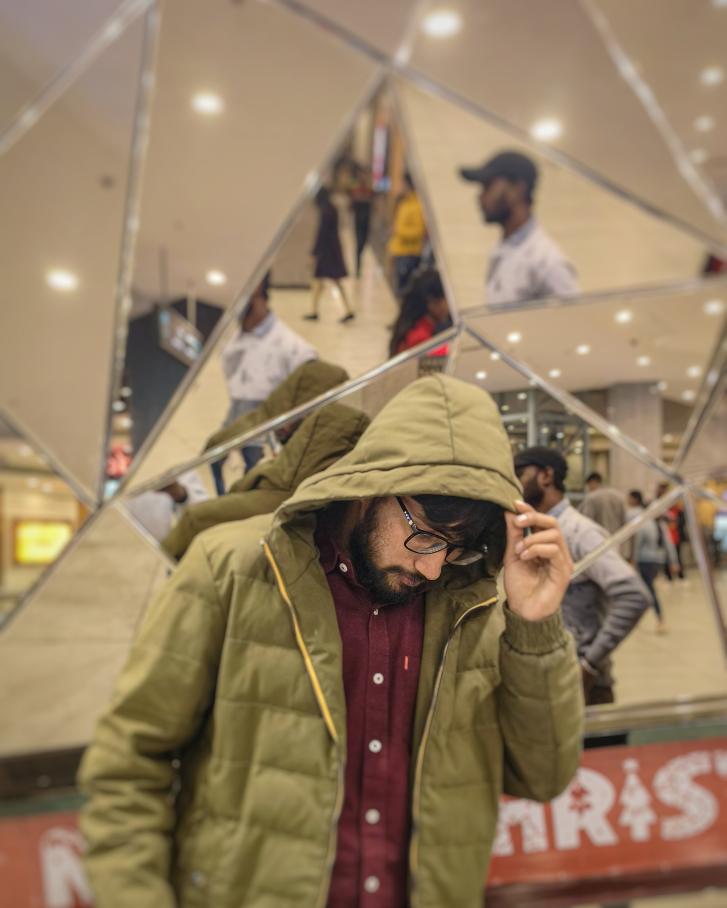

Hi,my name is Kaif and I am a

Work Experience

HTML developer (2016-2018)
Crafted responsive web interfaces by translating
design mockups into clean HTML code. Ensured cross-browser compatibility
and optimized code for fast loading. Collaborated with designers,
troubleshooted issues, and adhered to web standards.
Stayed current with evolving web technologies.

Node js Developer (2018-2020)
Engineered scalable server-side applications using Node.js, specializing in RESTful API development and database integration (MongoDB, MySQL). Applied microservices architecture, optimized performance, and collaborated cross-functionally. Proficient in Git for version control. Dedicated to staying current with Node.js advancements and ensuring reliable, efficient web applications.

Youtuber (2020-2022)
As a YouTuber from 2020 to 2022, I created engaging content, managed video production, and grew a subscriber base. Proficient in video editing, SEO optimization, and audience engagement strategies. Successfully navigated trends, fostering community interaction. Demonstrated creativity and adaptability in content creation for a diverse audience.

Leetcoder (2022-2024)
Passionate LeetCode coder with a track record of solving 300+ algorithmic problems. Adept at tackling complex coding challenges, demonstrating problem-solving skills, and mastering various data structures and algorithms. Committed to continuous learning and staying sharp in competitive programming.